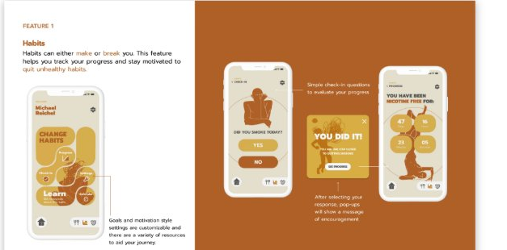
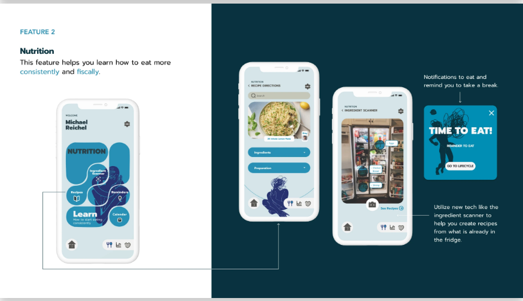
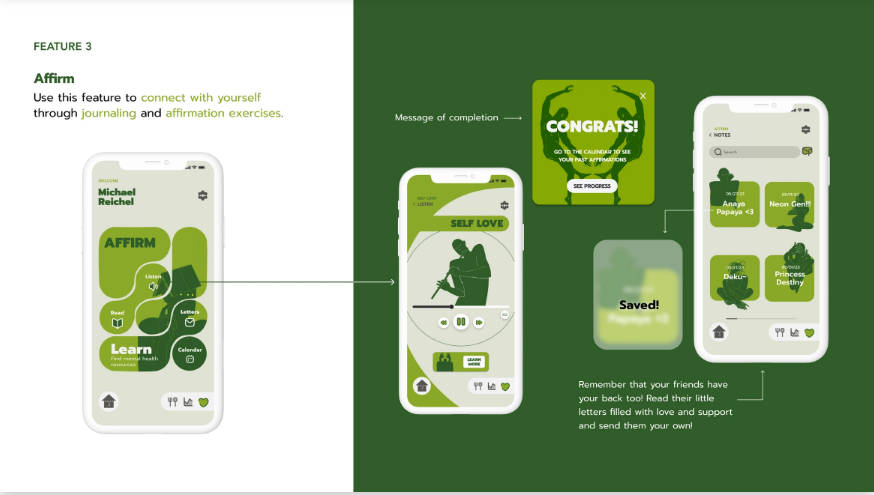

LifeCycle is an app that needed to be revamped. The results from the heuristic evaluation of what needed to be improved ranged from the lack of hierarchy, no instructions, to a general "clunky" feeling when the user is going through the app.
It is apparent that people have a difficult time managing their time in this day and age where everyone is easily accessible through their devices. Combining time-management with outside stressors is a recipe for disaster in the realm of today's "hustle culture."
Completely overhaul the original interface and user experience of LifeCycle. The new intention of the app would be to not track how much time each user spends in a location — but to design for the user's intended habits and wellbeing instead.
Note: the original page's "Team" field listed the same roster as the PayApp case study (1 PD, 2 PMs, 7 engineers) — that looks like a leftover template default rather than LifeCycle's real team, since this was a personal/competition project. Flagging so you can correct it with the real team.
Many insights were gained during this period due to conducting multiple empathy interviews, desk research on the target audience, app map iterations, and a competitor analysis on other life-improvement apps.
We did extensive research to get a thorough understanding of our target audience — this ranged from burnt-out doctors, to smoking addicts, to a self-conscious college student. Research on other lifestyle apps was also conducted for heuristic evaluation.
App Map Iterations: LifeCycle's original app map did not provide a clear end goal for the user. With this in mind, we sought to make this complex flow as simplistic as possible — essential for users who are likely already stressed out from their offline world.
Competitor Analysis: These apps (Fabulous, Flora, Structured) all have their own unique features, ranging from making self-care a game to a more list-like approach. Some had a decent range of options targeting various aspects of life improvement, but not a user-centered method — this is where we sought to find a solution.
Persona portraits are placeholders — swapped out from the original photos for this rebuild.
We concluded that users needed to find recipes depending on what is available, and a way to track the habit being perpetuated.
From our findings based on our user research and affinity maps, we noticed that everyone knows what the right thing to do is — but they lack the resources to achieve it.
Major insights from our findings with the user personas, journey maps, and HMWs led us to conclude that LifeCycle's user experience and interface needed an overhaul. The heuristic evaluation confirmed it was difficult for users to navigate and didn't cater directly to the specific needs of the app's users. Three specific features were designed for each persona's specified needs: Nutrition, Affirmations, and Habit Tracking.
My team and I created various sketches of the user interface to get a feel for what the layout would display. Detailed sketches were kept to a minimum in order to fully grasp whether the flow could be usable.
The mid-fidelity prototype was created simultaneously as user testing was conducted — live in-person observational testing as well as non-observational feedback through a survey after the user completed the flows. The demographic of testers ranged from children (age 12) to college students (18–21), millennials (35), and boomers (58–66).
Design motif, typefaces, and overall UI design were heavily explored during this step to create not only a usable but also a delightful experience for LifeCycle's features.
Heuristic Design: The goal of LifeCycle is to help people, so we needed to make it more people-friendly while also aesthetically pleasing.
Design Principles:

Habits can either make or break you. This feature helps you track your progress and stay motivated to quit unhealthy habits.

This feature helps you learn how to eat more consistently and fiscally — including an ingredient scanner to build recipes from what's already in the fridge.

Use this feature to connect with yourself through journaling and affirmation exercises — including sending your own written support to friends.
We were proud that we could design and research an app, each with features we are passionate about.
Using HMW and MVPs was a great method to use because it provided us with insight on how to continue the design system and purpose of the app.